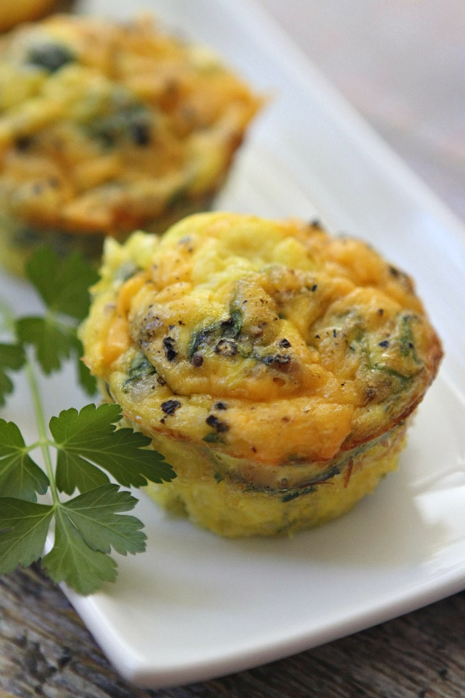

Egg Muffins Recipe

Description
If you want a small item that's perfect for a grab & go breakfast, these egg muffins are for you! High in protein, low in fat, but still extremely tasty, these portable snacks will keep you fueled on the go with minimal cooking.
Each muffin is about 123 calories and contains low fat turkey sausage, fresh spinach, nonfat milk, and reduced-fat cheese to help bring down the fat and calorie content, while still maintaining flavor. If you're feeling fancy, stick one in between an English muffin or bagel-thin for some extra carbs.
Ingredients
- 1 C packed fresh spinach, chopped
- 3/4 C cooked and crumbled turkey sausage
- 6 large eggs
- 1/4 C nonfat milk
- 1/3 C reduced-fat shredded cheese
- Salt and freshly ground black pepper, to taste
- Salsa, for serving (optional)
Steps
- Preheat the oven to 350 degrees F.
- Spray a nonstick skillet with nonstick spray, and quickly cook the spinach, just until wilted. Let it cool, then squeeze any excess moisture out of it.
- In a medium bowl, whisk together the sausage and spinach with the eggs and milk. Scoop into the prepared muffin tins (it can be helpful to use a 1/3 C measuring cup), almost to the top. Sprinkel cheese on top. Then give each a good dose of the salt and pepper.
- Bake 25-30 minutes or until the egg is thoroughly cooked through. Easy way to check the egg - touch the middle of the muuffins. If they are still wet and gooey, they need a little more time in the oven. They should feel cooked through.
- Serve the egg muffins immediately, with salsa if desired.